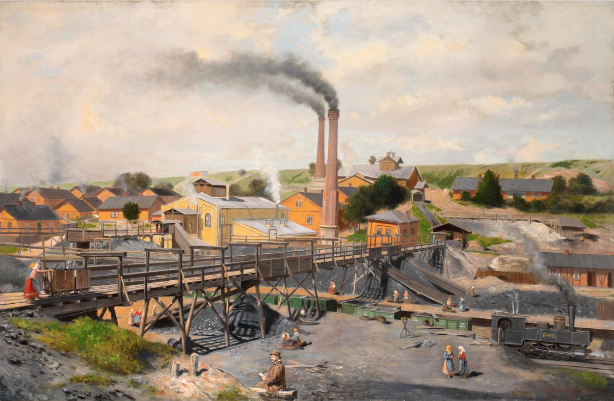

Transportul si Revolutia Industriala
Revoluția Industrială a avut un impact semnificativ asupra evoluției transportului, aducând schimbări radicale în modul în care oamenii și bunurile erau transportate. Această perioadă de transformare economică și tehnologică, care a început în Anglia în secolul al XVIII-lea și s-a răspândit apoi în întreaga lume, a revoluționat complet modul în care oamenii călătoreau și transportau mărfuri. Iată câteva moduri majore în care Revoluția Industrială a influențat evoluția transportului:

Invenția și extinderea căilor ferate: Una dintre cele mai semnificative realizări ale Revoluției Industriale a fost invenția căilor ferate și dezvoltarea sistemelor feroviare. Locomotivele cu abur au fost utilizate pentru a trage vagoanele pe șine, permițând transportul rapid și eficient al pasagerilor și mărfurilor pe distanțe lungi. Extinderea rețelelor feroviare a dus la creșterea conexiunilor regionale și internaționale și la facilitarea comerțului și mobilității umane.
Dezvoltarea transportului naval: Revoluția Industrială a adus îmbunătățiri semnificative în tehnologia navală, inclusiv în construcția navelor și în propulsia acestora. Utilizarea aburului pentru propulsie a permis construirea de nave mai rapide și mai puternice, deschizând noi rute comerciale și consolidând legăturile maritime între diferite țări și continente.
Inovații în transportul rutier: În timpul Revoluției Industriale, s-au făcut progrese semnificative în dezvoltarea și extinderea rețelelor de drumuri și căi navigabile interioare. Construcția de drumuri pavate și poduri a îmbunătățit semnificativ accesul la transportul terestru, facilitând circulația vehiculelor trase de cai sau de aburi, precum și a vehiculelor trase de motor.
Creșterea transportului urban: O altă consecință majoră a Revoluției Industriale a fost creșterea transportului urban. Dezvoltarea orașelor industriale a dus la o cerere crescută de mijloace de transport în masă, cum ar fi tramvaiele și trenurile de suburbie. Aceste sisteme de transport au fost esențiale pentru mobilitatea urbană și pentru transportul muncitorilor spre și dinspre fabrici.
Impactul tehnologiei și inovației: Revoluția Industrială a avut un impact general asupra tehnologiei și inovației în domeniul transportului. Dezvoltarea mașinilor cu abur, motoarelor cu combustie internă, locomotivelor electrice și a altor tehnologii a deschis noi posibilități pentru transportul de persoane și mărfuri, conducând la o creștere exponențială a vitezei, eficienței și capacitații transportului.